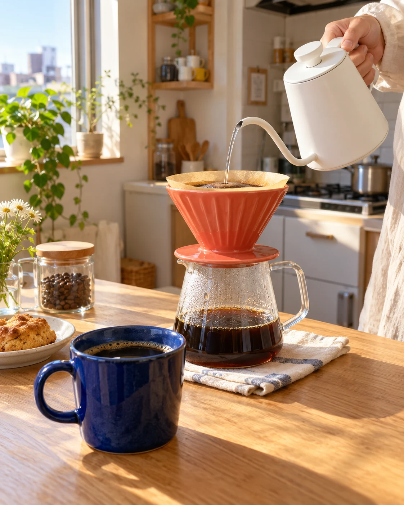
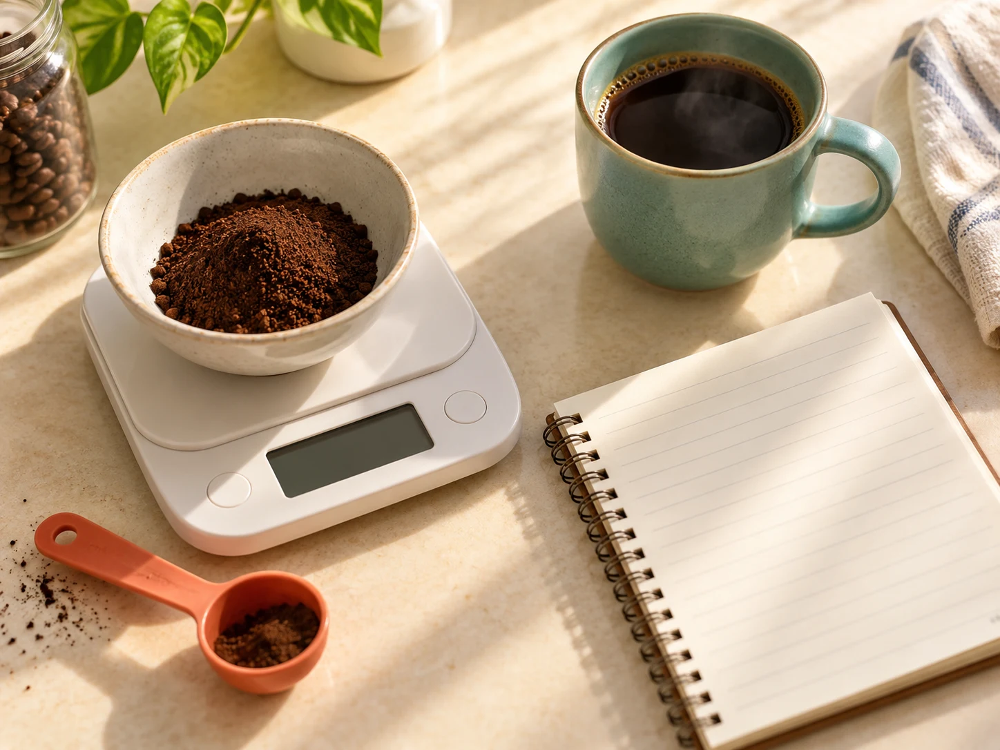

まずは「量」を
そろえてみる。
粉とお湯の量を毎回記録。味を比べるための、自分だけの基準をつくります。
● おうちコーヒーの小さなレッスン
高い道具を買い足す前に、
淹れ方をひとつだけ変えてみませんか。
自分の「好きな味」を探す3つのコツをLINEでお届けします。
LINEで友だち追加すると、3つのコツが届きます。

A SMALL CHANGE
コーヒーの楽しみ方に、ひとつの正解はありません。
でも、何を変えたか分かれば、次の一杯を試しやすくなります。
まずは、いつもの道具でできる小さなことから。
YOUR FIRST THREE STEPS
LINEで届く内容の一部をご紹介。
読むだけでなく、その場で試せる形に。
粉とお湯の量を毎回記録。味を比べるための、自分だけの基準をつくります。
同じ量のまま、注ぐペースを意識。いっぺんに変えず、違いを確かめます。
「軽い」「好きな苦さ」など、自分の言葉で。次の一杯のヒントになります。

道具より先に、MAKE IT YOUR OWN
難しい用語を覚えることから、
始めなくても大丈夫です。
いつもの豆。いつものマグ。
そこで見つけた小さな違いを、
自分のペースで楽しんでみてください。
A LITTLE HINT, ON LINE
3つのコツを、見返しやすい短いメッセージに。
気になったことから、ひとつずつお試しください。
3つのコツを、あなたのLINEにお届け。
いつもの粉とお湯の量をメモしてみましょう。
BEFORE YOU START
ハンドドリップの道具をお持ちの方を対象としています。量を記録する際にはスケールを使います。高価な器具への買い替えを前提にせず、今の道具で試すことを大切にしています。
はい。量をそろえる、注ぎ方をひとつ変える、感想を残すという、基本の3つを扱います。専門用語ではなく、自分がどう感じたかを大切にする内容です。
公式LINEを友だち追加した後に、メッセージでお届けします。量の記録、注ぎ方、味のメモを、淹れる前に見返せる短い内容にまとめています。
SEE YOU TOMORROW MORNING.
まずはLINEで友だち追加。明日の一杯から試してみませんか。